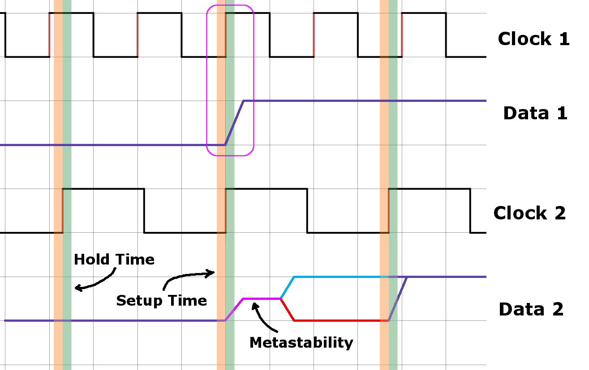
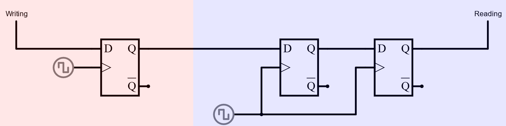
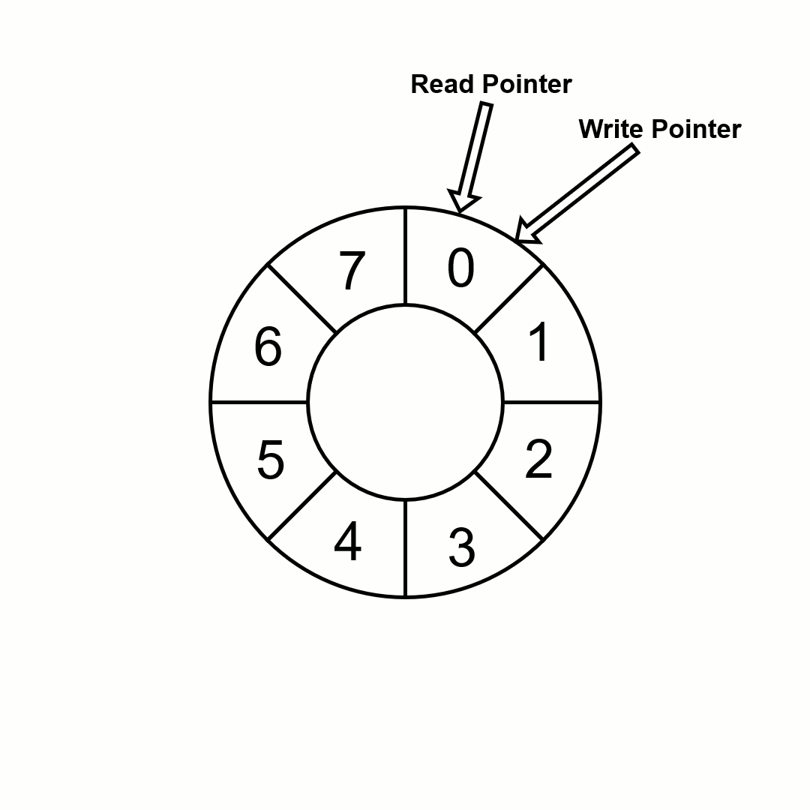
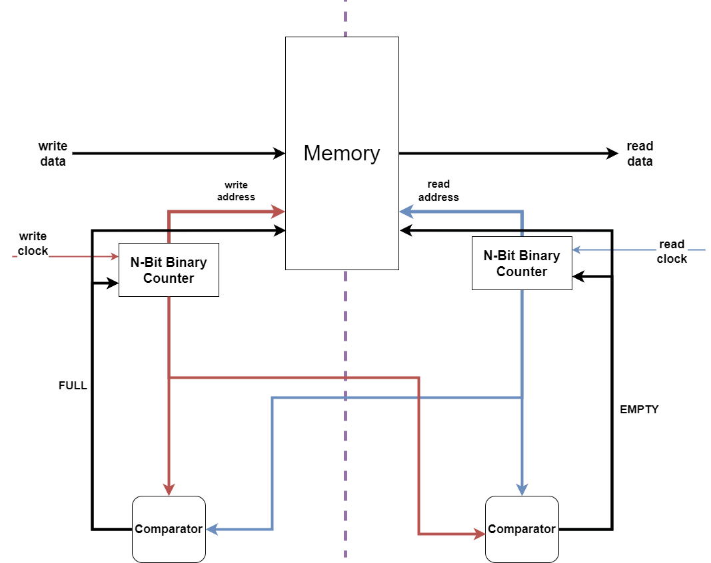
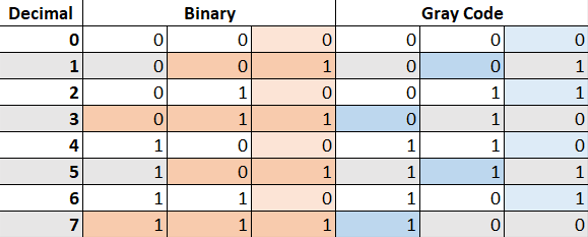
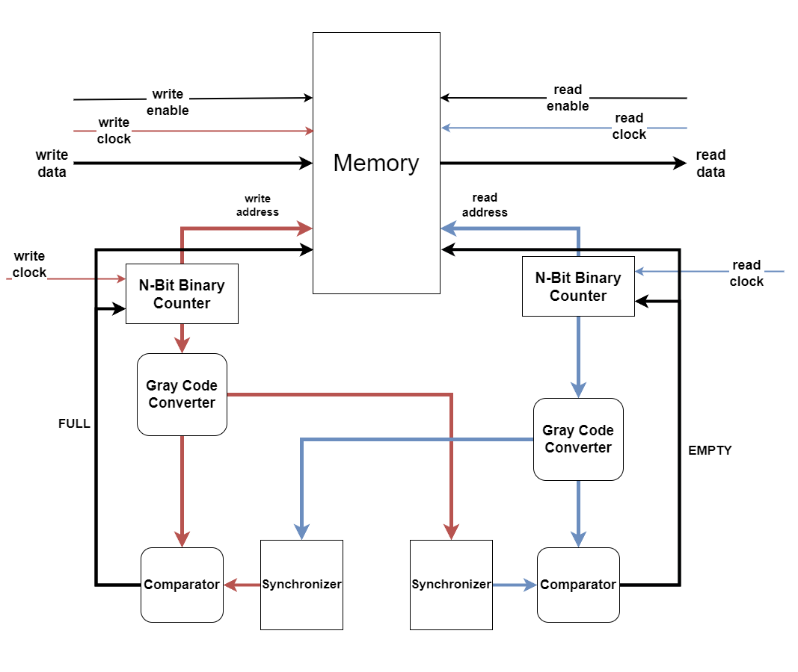
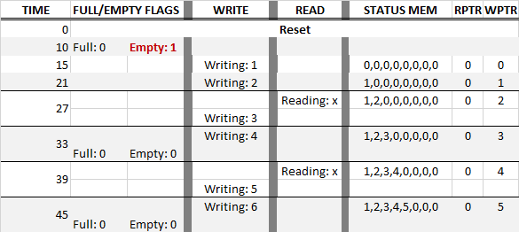
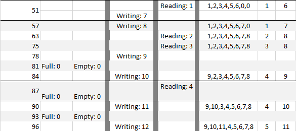
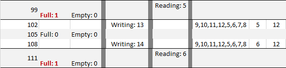

Clock Domains
Sometimes in digital logic there are multiple "clock domains" that must communicate using different clocks either in frequency or phase. Communication can no longer be guaranteed to occur at the same clock edges making this asynchronous. Furthermore, if one clock is faster, communications will needed to be temporarily buffered until the slower clock can catch up. Thus two problems need to be solved: buffering and asynchronous signaling.
Synchronizing
Asynchronous Signaling
Imagine a scenario where two latches are trying to communicate only one bit asynchronously. Eventually a timing violation will occur where an input to a latch is changing during the latch operation. Due to the internal capacitances of a latch, some amount of time is needed to fully sample the bit. If the input changes during this time, a metastable state occurs which is neither a clear binary high nor low, but right between. This state is eventually resolved to a valid binary value but the state it resolves to is nondeterministic and therefore the wrong information could be communicated during these events. Moreover, if a metastable state is seen by other logic before it resolves, a cascade of more errors will ensue.

Figure 1
Figure 1 above demonstrates this occurring when clock 1 latches a high bit changing data 1. This happens at the same time clock 2 is trying to latch in data 1 causing metastability due to a "Hold Time" violation. Eventually this metastability resolves before normal operation continues without timing violations.

Figure 2
The primary goal for now is to ensure the metastability never reaches logic on the other side of the receiving latch. The simplest way to do that is by adding another latch as in Figure 2. As long as the metastability resolves to a valid binary state within a clock cycle, the last latch will never be in a metastable state and the rest of the logic is safe. This circuit is referred to as a Synchronizer. The more latches used the more secure the synchronizer is but at the cost of a few clock cycles.
Note that synchronizers do not solve the problem of metastable states resolving to a random binary state. This only protects against leaking metastability meaning this form of asynchronous communication can still send incorrect information. After seeing how to buffer information the solutions to working with this lossy communication will be explained.
Buffering with a FIFO
A simple way to buffer data and maintain chronological order is a First-In-First-Out (FIFO) buffer. A FIFO works by having a block of memory that is addressed by a write and read pointer. The end of memory simply wraps around to the beginning forming a ring buffer.
The animation of Figure 3 shows an example of read and write operations. The write pointer always points to the next free space, and the read points to the last item in the buffer. They can go around and around the buffer reading and writing until the buffer fills or empties.

Figure 3
If the read and write pointers are at the same address, it is known that the buffer is either full or empty. Either the write pointer has wrapped around and filled the buffer making it full, or the read pointer has caught up to the write pointer and the buffer is empty. The problem arises in differentiating if the write pointer has wrapped around or the read pointer has caught up. How can we solve this?
The FIFO uses a simple technique to keep track of the pointers in relation to each other. In the example figures, the buffer is eight words long meaning it requires a three bit address. If the address is extended to four bits, the last bit will toggle every time the pointer wraps around the ring. Therefore, this fourth bit keeps track of which cycle it is on. If the read and write pointers have the same MSB, they are on the same cycle and the buffer must be empty. If the read and write pointers have different MSB's, then they are out of phase by a cycle and the buffer must be full. Knowing that the read can never pass the write pointer allows these situations to be distinguished.
Putting them together

Figure 4
A typical FIFO buffer will work as shown in the Figure 4. The bulk memory is accessed by a read and write pointer. These pointers are automatically incremented by a counter when the system is enabled for reading and writing. As discussed before, one extra bit is required for keeping track of the cycle around the memory. Using the read and write addresses, a comparator circuit can determine if the buffer is full or empty to avoid overflow and underflow.
Multibit Communication Across Domains
There is only one problem with this design. In order to compare the read and write addresses the pointer data must cross the clock domain! There is no other way of getting the information across. We are now back to square one trying to asynchronously communicate multiple bits!
One idea is to simply use an array of synchronizers for each bit of the pointer. That will solve the metastability problem, right? Yes, metastability can be solved with a synchronizer but as originally discussed, if the first receiving latch enters a metastable state it will resolve to a random binary state and accuracy isn't guaranteed. A consequence of the loss of information in these metastable events is that the communicated address could be received completely wrong causing the buffer to over or under flow. Imagine if the address changed from a 3/(011) to a 4/(100). This requires three bits to be synchronized which could end up as any address given a metastable event.

Figure 5
Hope is not lost yet! We aren't really back to square one because not all data is equal. The data we want to communicate are addresses which follow a clean chronological pattern. This means not all bits have to be communicated, but only the bits that change chronologically. Figure 5 shows a three bit sequence of binary addresses. The orange highlights show what bits change going down the list chronologically. Unfortunately this means there are still situations in which all three bits must be synchronized risking lossy communication.
The solution to this problem are Gray Codes which work by rearranging the bits such that only a single bit change occurs for adjacent addresses. The blue highlights in the Figure 5 show the changes that needed to be synchronized, of which only one occurs for every line.
To summarize, using Gray Codes, the FIFO only needs to synchronize a single bit each clock cycle as the address increments through the buffer. While this is good news, won't the synchronizer still lose information if it encounters a metastable event? The answer is yes, the single bit will still be communicated incorrectly at some point! Unlike binary addressing though, if one bit is wrong it will never lead to an overflow or underflow! If an error does occur, the address can only ever lag one location behind which cannot lead to an invalid FIFO state.

Figure 6
Results
The system is implemented as shown in Figure 6. Verilog cannot simulate metastability nor the lossy communication of a synchronizer so these tests are not complete enough to validate a FIFO design. Despite this, the logical behavior of the system can be tested and the read and write sides will have different clocks speeds. The write will be double the frequency of the read for this example. The memory is eight words long, and increasing integers starting from one will be written.

Figure 7
To start the system is first reset such that everything is zeroed out. Notice the Empty flag is high at the start. Now, the system begins writing and reading. The rightmost columns show what is in memory, as well as the read and write pointer locations. As the systems writes, the write pointer increments with some delay due to the print and internal pointer counter delays. The system reads nothing for two read cycles due to the empty flag clearing. By the end of the first table, the buffer has five items written to it.

Figure 8
Picking up at the next update, the first read operation occurs freeing the first memory slot to be overwritten later. The reading and writing now continue smoothly. The write pointer wraps around at cycle 75.

Figure 9
The write is faster than the read so eventually the buffer would fill up. This can be seen at cycle 99 and 102 where the write catches up to the read pointer at index 5. The buffer does another read and write triggering a Full flag again at the last cycle. The Full and Empty flags are delayed as the address must be converted to a gray code, then pass through the synchronizers, and finally do the compare operation. This delay means that the buffer may appear full or empty for longer than it is, but this will never lead to an overflow or underflow situation.